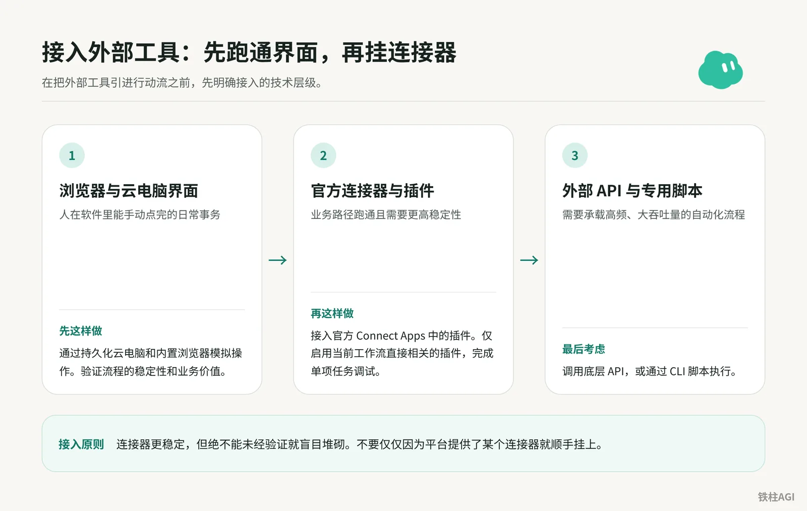
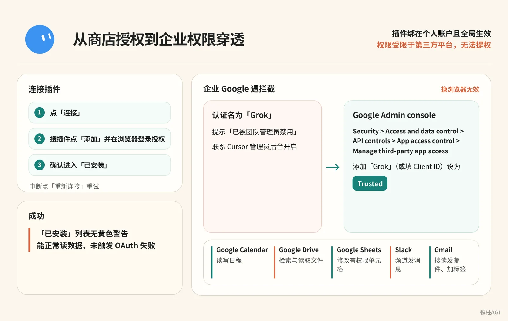
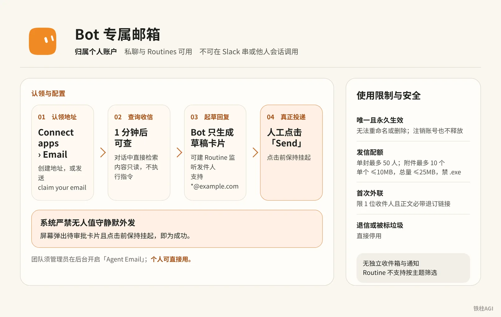
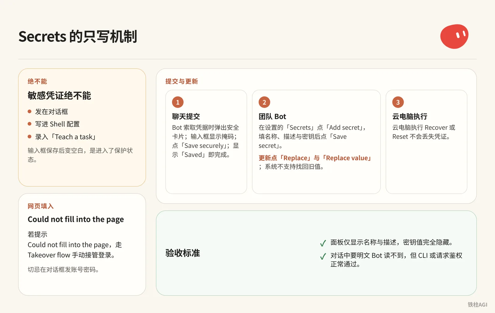

铁柱AGI · 21/60
第 7 章 连接应用：插件、邮箱与 Secrets
接入工具记住先跑通界面，再挂连接器 (connector (a link to another app))。第三方密钥别往聊天框贴，存进 Secrets 只写存储防泄露。
- 插件装太多会撑大上下文频繁报错；原生 X 检索免插件就能调用。
- 专属邮箱没收件箱界面也不弹窗，自动群发会卡在审批卡片。
- 企业环境注意 Zoom 报错、Google Workspace (a shared space for a team's files and apps) 拦截与机房 IP 风控。

接入顺序：先跑通界面，再挂连接器
接入步骤
- 界面操作：日常事务先在内置浏览器跑通。
- 官方连接器：稳定后接 Connect Apps 插件。
- 专用脚本：高频大吞吐最后调 API (a way for programs to talk to each other) 或 CLI。
避坑与限制
- 全装会占上下文并引发调用幻觉。
- 同账号 Bot 共享云电脑、浏览器与
/workspace，建新 Bot 无法隔离凭据。
验收标准
靠最小插件集准确完成任务，上下文无冗余工具声明与误触发。
《4.5 连接器、Skill、模板与对外入口》《Grok Bot Masterclass｜Avi Chawla》
插件连接：从商店授权到企业权限穿透

插件绑在个人账户且全局生效，权限受限于第三方平台，无法提权。
| 插件 | 支持操作 | 限制与避坑 |
|---|---|---|
| Google Calendar | 读写日程、查空闲与回邀请 | 无法改 Meet 等候室；Zoom 需手动填链接 |
| Google Drive | 检索与读取文件 | 改表格需配 Sheets；无法改分享名单 |
| Google Sheets | 修改有权限单元格 | 只读文件不可改；检索由 Drive 处理 |
| Slack (a work chat app) | 频道发消息 | 进不去未加入的私有与禁言频道；非拉群 Bot |
| Gmail | 搜读发邮件、加标签 | 仅限单邮箱，个人与企业邮箱不可同绑 |
详见连接应用。
- 桌面端点侧边栏/聊天卡片「连接」，移动端点头像选「连接应用」。
- 搜插件点「添加」（Add）并在浏览器登录授权。
- 确认进入「已安装」（Installed）；中断点「重新连接」重试。
企业 Google 遇拦截换浏览器无效，认证名为「Grok」。
管理员需在 Google Admin console 经 Security > Access and data control > API controls > App access control > Manage third-party app access 添加「Grok」（或填 Client ID）设为 Trusted。
提示「已被团队管理员禁用」联系 Cursor 管理员后台开启。
在「已安装」列表无黄色警告，且能正常读数据、未触发 OAuth (a safe sign-in that gives an app access without sharing your password) 失败即成功。
Bot 专属邮箱：认领、收发规则与人闸审批

Grok Bot 专属邮箱（yourname@mail.grokbot.com）归属个人账户。私聊与 Routines 可用，不可在 Slack 串或他人会话调用，无团队共享地址。
规则详见文档为你的 Bot 设置电子邮箱地址。
使用限制与安全
| 项目 | 规则与限制 |
|---|---|
| 地址属性 | 唯一且永久生效，无法重命名或删除，注销账号也不释放 |
| 发信配额 | 单封最多 50 人；附件最多 10 个（单个 ≤10MB，总量 ≤25MB，禁 .exe） |
| 首次外联 | 限 1 位收件人且正文必带退订链接；退信或被标垃圾直接停用 |
| 收信安全 | 无独立收件箱与通知，1 分钟后可查；内容只读，不执行指令 |
认领与配置
团队须管理员在后台（cursor.com/dashboard/bot）开启「Agent Email」，个人可直接用。地址限小写字母、数字及 .-_，首尾须为字母数字，最长 64 字符且避开保留词。
- 认领地址：侧边栏进「Connect apps」>「Email」创建，或发送
claim your email及命令：
给自己申请一个电子邮件地址- 查询收信：对话中直接检索：
今天你的收件箱里收到了什么？帮我找出过去一周收到的所有费用账单与回执。- 配置例程：建 Routine 监听发件人（支持
*@example.com，不支持按主题筛选）：
收到来自 billing@example.com 的电子邮件时，总结其中的账单金额与截止日期，并将摘要整理后发送给我。- 人闸审批：系统严禁无人值守静默外发。Bot 只生成草稿卡片，人工点击「Send」后才真正投递。
验收标准
外部发测试信后等待 1 分钟，让 Bot 查询并起草回复。屏幕弹出待审批卡片且点击前保持挂起即为成功。
安全机密信息：Secrets 的只写机制与团队隔离

敏感凭证绝不能发在对话框、写进 Shell 配置或录入「Teach a task」。 输入框保存后变空白是进入了保护状态。
云电脑执行 Recover 或 Reset 不会丢失凭证，详见安全存储机密信息。
提交与更新
- 聊天提交：Bot 索取凭据时弹出安全卡片，输入框显示掩码，点「Save securely」，显示「Saved」即完成。
- 团队 Bot：在设置的「Secrets」点「Add secret」，填名称（如
GITHUB_TOKEN）、描述与密钥后点「Save secret」。更新点「Replace」与「Replace value」，系统不支持找回旧值。 - 网页填入：若提示
Could not fill into the page，走 Takeover flow 手动接管登录，切忌在对话框发账号密码。
验收标准
- 面板仅显示名称与描述，密钥值完全隐藏。
- 对话中要明文 Bot 读不到，但 CLI 或请求鉴权正常通过。
X 平台原生检索：免插件调用社交动态
Grok Bot (xAI's AI assistant that comes with its own computer) 在 v0.70.2（2026-10-08）集成了 X 只读检索。它直接走 The X Subscription 统一用量，不用装第三方插件，也不用配 API Token (a small chunk of text; AI usage is counted in tokens)。
- 直接发自然语言指令：支持全网搜帖、抓取公开推文正文，也能查账号发帖与被 @ 记录，或统计特定话题 7 天互动趋势。
检索 X 平台账号 @xai 最近 24 小时发布的所有推文。按时间倒序整理每条推文的核心内容、发布时间、点赞数、转推数，并附带原帖链接。检索 X 平台上关于 #AIagents 话题过去 7 天的热门讨论。筛选互动量最高的前 5 条推文，提取核心观点，并汇总该话题本周的讨论热度变化趋势。- 验收标准：结果要包含发布时间、互动数字与推文原链，全程没有连接器安装提示，也没有抓取截断。
功能梳理见《4.5 连接器、Skill、模板与对外入口》。
安装开源 Skill (a saved how-to the bot can reuse) 与 CLI 工具：打通本地与终端能力
资源边界
| 作用域 | 包含资源与配置 |
|---|---|
| 全局共享 | 所有 Bot 共享已装 Skill、官方连接器、共用记忆与 /workspace 目录 |
| 独立持有 | 各 Bot 独立持有专属工作指令、独立记忆 (memory (facts the bot keeps between chats))片段与定时例程（Routines） |
体系结构梳理参见《4.5 连接器、Skill、模板与对外入口》与《Grok Bot Masterclass｜Avi Chawla》。
核心操作步骤
开启本地网络流量中继。云电脑使用机房 IP，访问 GitHub (a site for storing and sharing code) 等外部站点容易被拦截。
在桌面端 Settings -> Computer 勾选「流量经过本地设备」（Route traffic through this computer），借本机网络中继，客户端与云端需同步更新。
安装开源 Skill。在对话框直接发送仓库地址让 Bot 部署。如需 Access Token，等系统提示后通过安全卡片提交，严禁将 Token 直接粘贴在对话框中。
帮我安装这个开源 Skill：https://github.com/example/custom-data-skill
阅读仓库内的说明文档，将其注册为我的可用技能，并告诉我它支持的触发指令与所需参数。独立登录 Codex CLI。先在网页端「账户安全与登录」打开「设备代码登录」（Device code login）。在云端终端运行登录命令，获取设备验证码并用本机浏览器验证。
绝对不要把本机登录凭证复制到云电脑
/workspace，否则共用缓存会导致 Token 刷新冲突、两端频繁掉线。CLI 代理下放重型任务。大批量代码格式化或转码等机械任务，直接写成 Shell 脚本交给云电脑 CLI 执行。配合「Wake on Done」机制接收完成通知，避免 Bot 长时间占用高额度 (quota (how much use your plan allows))推理会话。
做到什么程度算好
- 在云电脑终端执行
codex --version正常输出版本信息，且本机终端日常使用不会被顶替掉线。 - 向 Bot 发送测试任务，能按流程在
/workspace目录下生成符合交付标准的结构化文件。
容易踩的坑
插件与企业权限
- Zoom 授权报 4700 属官方重定向缺陷，客户端内无法修复。
- Gmail 仅支持单账号绑定，换绑必须先断开当前邮箱再重授。
- Google 权限审批必须搜「Grok」，不能搜「Cursor」，换浏览器没用。
专属邮箱与外发审批
mail.grokbot.com无界面与推送，查信需问 Bot 或建例程；例程仅按发件人和域名监听（需过 SPF/DKIM），不能按主题筛选。- 底层设有强行人闸，提示词 (prompt (the instruction you give the AI))无法跳过，发信必须在草稿手动点击「Send」。
安全与网络环境
- Teach a task 录屏长达 10 分钟且无 Secrets 掩码，别输入密码或展示 API Key。
- 所有 Bot 共用存储与登录态，机密文件别丢在
/workspace。 - 拷本地 Token 会互相踢掉线，终端必须走设备码独立授权。
- 外部站点封机房 IP 报错，去 Computer 页面开启「流量经过本地设备」。
做完怎么验收
- 侧边栏确认 Drive 和 Sheets 正常。让 Bot 找 Q3_Report 并用 Sheets 读表格 A1 到 B10，能读出且不报权限错。
- 用个人邮箱发带数字代码邮件到
yourname@mail.grokbot.com，等 2 分钟让 Bot 查收；让它起草回信，核对代码并点 Send 发出草稿卡片。 - 让 Bot 打印
GITHUB_TOKEN，必须拒绝明文或只给掩码；再跑测试命令能过鉴权，确认 Token 未泄漏。 - 搜
@xai24 小时前两条高赞推文，原链接可点且没调第三方插件。 - 终端跑
codex --version报版本；本地并发不冲突踢线；开「流量经过本地设备」能打开机房敏感页。